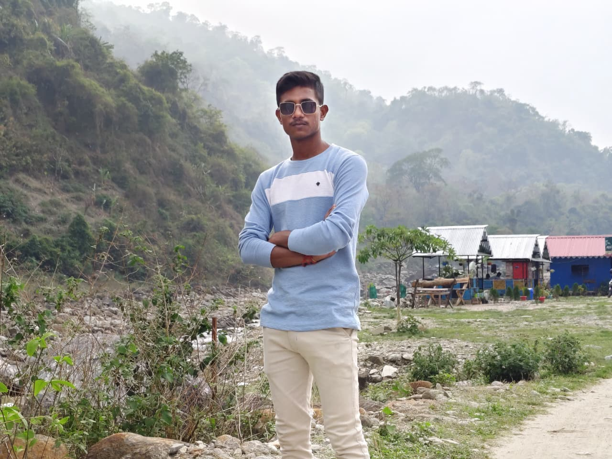

DISCIPLINE
A defining principle.
DISCIPLINE IN ACTION.
CURIOSITY IN MOTION.
Serving with purpose. Learning with intent. Exploring the world of technology, one idea at a time.

IDENTITY IS MORE THAN A TITLE.
A personal journey shaped by service, steady learning, and a genuine curiosity about what technology can make possible.
Ranjan Chaki is an Army Agniveer, a technology enthusiast, and a B.Sc. student pursuing distance education through Raiganj University. This space brings those parts of his journey together—without pretending the journey is finished.
A defining principle.
A continuing journey.
An area of curiosity.
An ongoing commitment.
NO SHORTCUTS. JUST PROGRESS.
A work in progress, built around the things that matter: responsibility, education, curiosity, and what comes next.
SERVICE
Military service is one part of Ranjan's story. Public details can be added here when he chooses what to share.
CURRENT CHAPTEREDUCATION
Currently pursuing a Bachelor of Science through distance education. Program details and dates remain editable.
IN PROGRESSTECHNOLOGY
Following curiosity across technology, computing, software, and the ideas shaping tomorrow.
EXPLORINGWHAT'S NEXT?
Future goals, meaningful projects, and new milestones belong here when they are ready.
TO BE WRITTENTHE DIGITAL SIDE OF THE STORY.
A space for exploring technology, learning new concepts, experimenting with ideas, and turning curiosity into practical knowledge.
Exploring how digital tools, software, and systems work—and how they can be used to build useful things.
A clean place to list verified skills once specific tools, languages, and experience are confirmed.
One small principle for turning curiosity into something useful.
A simple learning loop—not a claim about completed work.
A collection of proposed builds, interface experiments, and technology concepts exploring discipline, problem-solving, and digital craftsmanship.
An offline-first workspace for capturing information, organising field notes, and accessing essential references without depending on a constant internet connection.
A focused developer workspace that brings tasks, project status, quick actions, and development notes into a single terminal-inspired interface.
A structured learning dashboard that transforms subjects, assignments, deadlines, and revision sessions into a clear and manageable study plan.
A visual learning experience that makes everyday cybersecurity easier to understand through simulated scenarios, security checklists, and interactive educational modules.
A minimal daily operating system built around consistency, measurable progress, and the small routines that compound over time.
An exploration of digital identity through typography, motion, geometric systems, and an interface inspired by precision and forward thinking.
These are proposed concepts and visual interface studies—not completed applications. No live demos, repositories, results, or performance claims are implied.
A PERSONAL PRINCIPLE / NOT A QUOTE
CURIOSITY DOESN'T CLOCK OUT.
The most interesting part of technology is not just what it can do today, but what becomes possible when someone stays curious.
An area of interest to explore and document over time.
A continuing thread across education and personal growth.
Following ideas, tools, and useful new ways of solving problems.
These are broad themes, not claims of professional expertise. More personal interests can be added with Ranjan's approval.
GOOD IDEAS START SOMEWHERE.
Interested in technology, ideas, collaboration, or a meaningful conversation? Reach Ranjan Chaki using one of the verified contact options below.